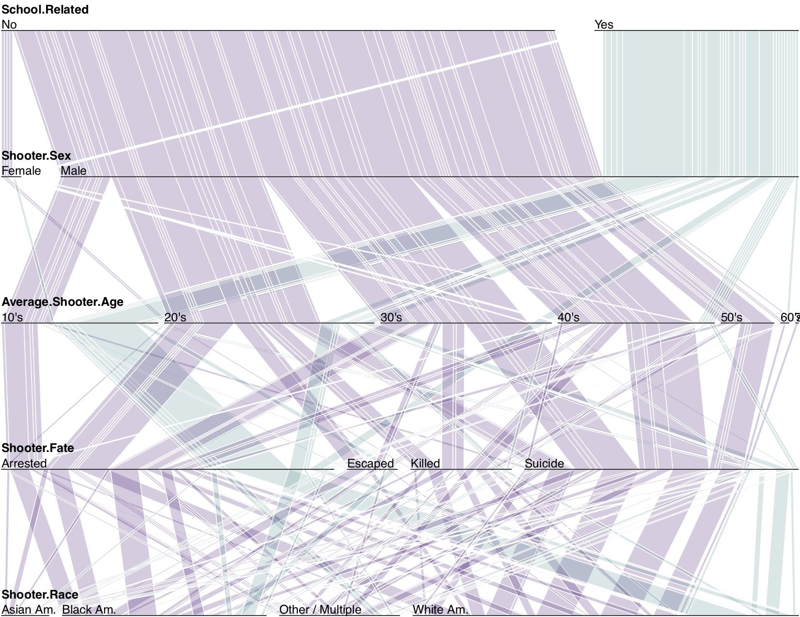
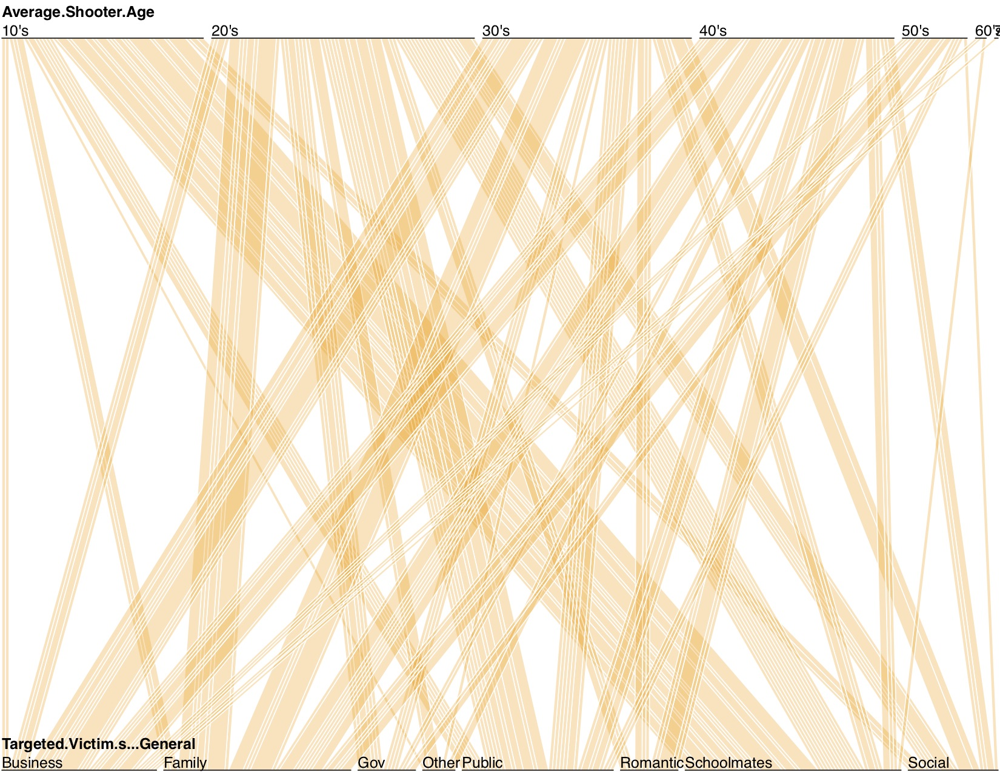

Mass Shootings and Gun Violence in Contemporary American Society
Mass shootings aren’t uniquely American events, however no other western countries seem to face this particular form of public violence so frequently. Much noise has always been made about these questions in sensationalist US media, however following two particularly gruesome and indiscriminate mass shootings in late 2017 and early 2018, there seems to be a recent re-evaluation of our stance on guns and violence in private conversation as well.
What are the social costs to mass shootings? What are the identifying characteristics of their perpetrators, and what weapons do they use in their attacks? What is the breakdown, timeline, and evolution of this phenomenon in the States? What are the motives behind mass shooters? What correlations exist in observable factors, and how is the data distributed? We would like to paint a comprehensive picture of the major components of mass shootings in the US, while sticking to the facts and keeping partisanship out of our report.

Yearly Trend: The time plot has a slider from which you can adjust the range of years you want the plot to display

World Map of mass shoots from 1966 to 2016: Hover on each location to see the event record.
Some of major mass shoots are led by teenagers and young adults. Eastern areas have more spread of mass shoots than western US.

Radar plot of mass shoots motives from 2008 to 2016:
Year 2015 and 2016 have more mass shoot events than previous years. You can unselect 2015 and 2016 to see the trend of rest of the years. The major motives behind shooters are domestic dispute, social dispute/ rejection/ harassment, followed by multiple motives and mental illness.
Parallel Coordinates for Shooter Profiles
Parallel Coordinates 2
Treemap for Guns: The 0's, 20's ... groups represent number of victims
Qian Li (qli42@dons.usfca.edu)
Christopher Csiszar (cpcsiszar@usfca.edu)